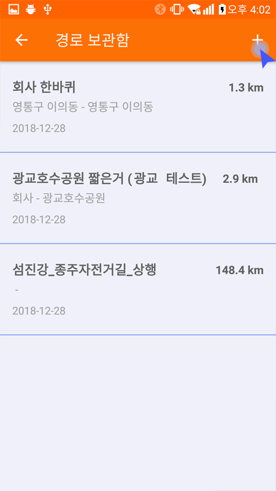
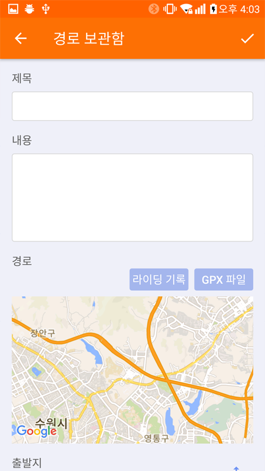
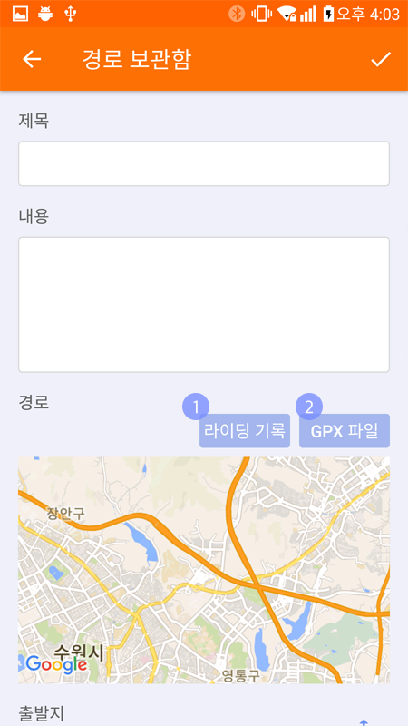
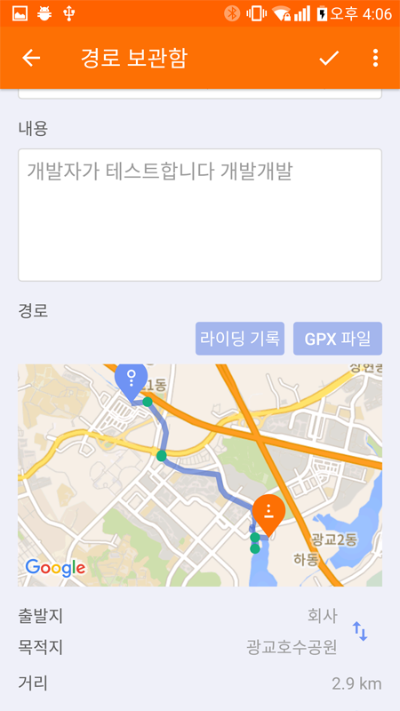
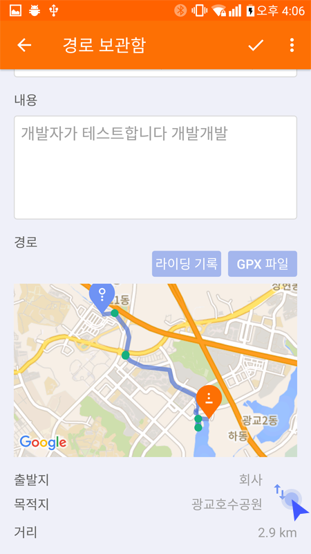
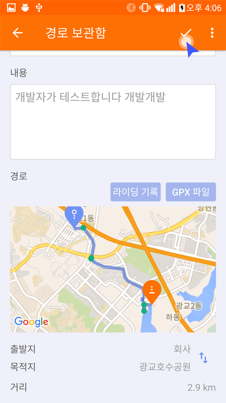
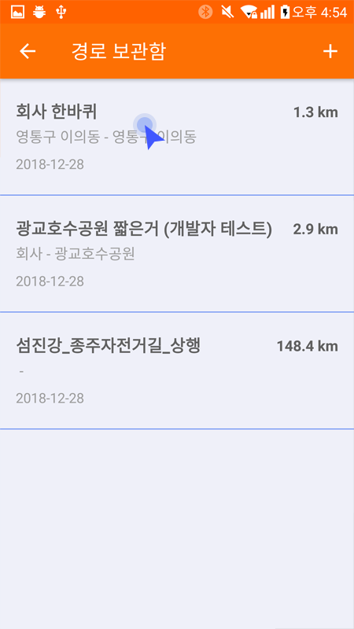
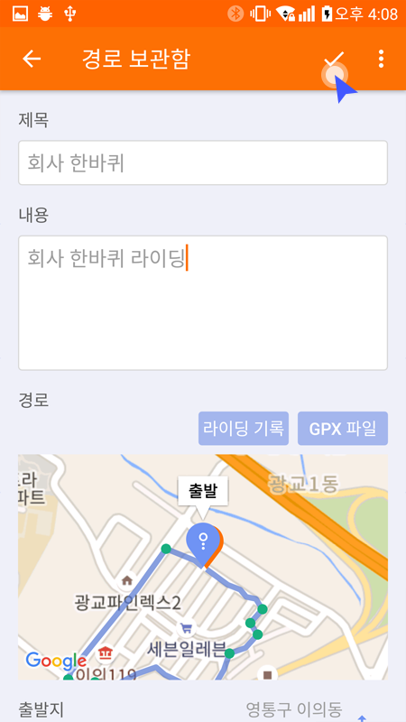

* 경로보관함에 경로가 생성되어 있어야 라이딩시 경로를 불러올 수 있습니다.
‘경로 보관함' 메뉴를 통해서 경로 보관함 목록으로 이동합니다.
‘+’버튼을 클릭하면 경로 추가화면으로 이동 됩니다.
제목과 내용을 입력합니다.
경로를 가져올 수 있는 방법은 4가지가 있습니다.
① ‘라이딩 기록': 추가 화면의 ‘라이딩 기록'버튼을 통해서 자신의 라이딩 기록을 선택해서 가져 올 수 있습니다. ② ‘GPX 파일': 추가 화면의 ‘GPX 파일'버튼을 통해서 휴대폰 내 저장되어 있는 GPX파일을 직접 선택해서 경로를 가져올 수 있습니다. ② 추천경로: 메인메뉴의 ‘추천경로'메뉴를 통해서 경로를 추가할 수 있습니다.
경로가 추가되면 출발지 및 목적지 그리고 경로가 지도에 표시됩니다.
해당 버튼을 통해서 출발지와 목적지를 변경 할 수 있습니다.
완료 버튼을 클릭하여 내용을 저장하면 경로 추가가 완료됩니다.
‘경로 보관함' 메뉴를 통해서 경로 보관함 목록으로 이동합니다.
수정 및 삭제 하려는 경로를 선택합니다.
내용을 수정하고 완료 버튼을 클릭하면 수정된 내용이 반영됩니다. 우측의 더보기 메뉴로 ‘삭제'버튼을 클릭하면 경로가 삭제됩니다.